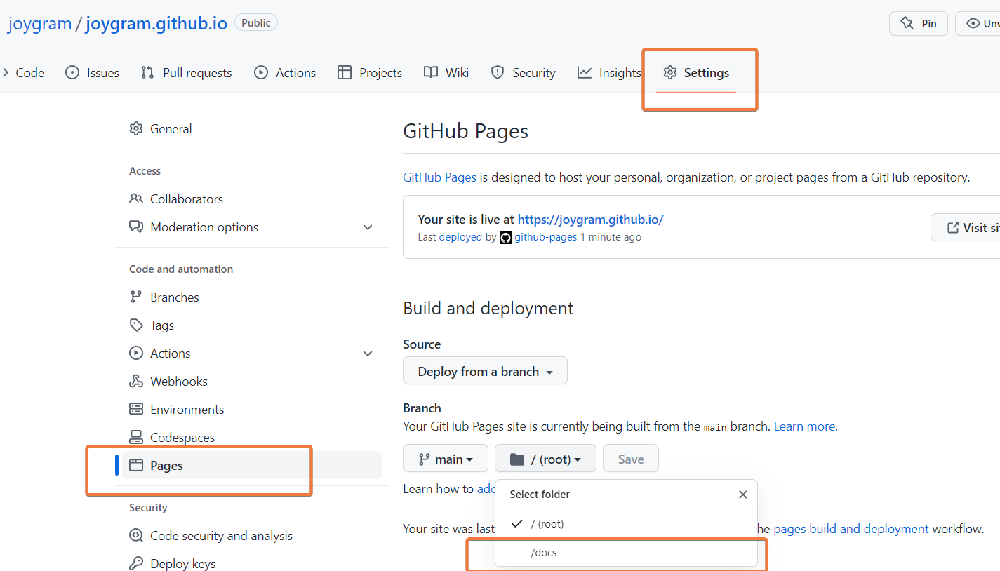

quarto를 이용한 디지털 보고서 작성
quarto와 github을 이용하여 디지털 보고서 및 문서를 작성하여 볼 수 있습니다. 동적인 문서는 애플리케이션으로 만들고 반응형 문서 / 보고서는 quarto를 이용하여 제작하여 볼 수 있습니다.
쿼토(Quarto) GitHub Pages에 배포해보기
배포저장소 만들기
github.com에 새로운 저장소(New Repository)를 만듭니다.
username.github.io이름으로 저장소를 만듭니다. username은 팀이나 개인의 이름을 넣어줍니다.
개인의 깃헙페이지를 만들어보겠습니다.
joygram.github.io쿼토(quarto) 페이지 정보(_quarto.yml) 만들기
#_quarto.yml
project:
type: website
output-dir: docsgithub의 ‘Jekyll’ 툴 동작하지 않게 하기
.nojekyll 파일 만들기
touch .nojekyll
or
copy NUL .nojekyllgit에 올리기
quarto render
git push를 진행하면 github-pages 항목을 확인할 수 있습니다.

배포 디렉토리의 설정
github의 respository Settings -> Pages에서 문서 디렉토리를 지정합니다.

수동으로 반영
push할 때마다 자동으로 빌드되도록 반영할 수 있고 필요에 따라 수동으로 배포할 수 있습니다.